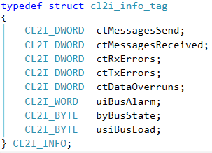

Required functions¶
There is a minimum set of functions which have to be at least implemented by a CANMiniDriver.
CMD_GetInfo: Supported functions¶
Figure 3: Info structure
- bySupport: A bit field with following possible bits:
Figure 4: Supported functions bits
- byMaxCycleIndex: Contains the maximum number of cyclic messages (if SetCycle is supported).–> If one cyclic message is supported: set to 1.
byMaxMaskIndex: Not yet used by current implementation. Use 0.
byMaxPrio: Not yet used by current implementation. Use 1.
- byNLed: Number of LEDs. 0: No LED, 1: Bicolor LED, 2: red and green LED.Not yet used by current implementation.
Example:
static CMD_INFO cmdInfo = {
CMD_SUPPORT_RTRFRAME | CMD_SUPPORT_EXTCOBID | CMD_SUPPORT_BUSALARM
/* support RTR, Busalarm and 29 bit */,
0 /* maxCycleIndex */,
0 /* maxMaskIndex */,
1 /* maxPrio */,
0 /* maxLed */
};
static CAA_ERROR CMD_GetInfo(CL2I_BYTE byNet, CMD_INFO* pInfo)
{
if (pInfo)
{
memcpy((void*)pInfo, (void*)&cmdInfo, sizeof(CMD_INFO));
}
return CMD_NO_ERROR;
}
CMD_Setup and CL2_CmdRegister: Hardware identification, registration, and initialization¶
{kind=link}
Figure 5: Init sequence
At startup (CH_INIT3 hook), a CANMiniDriver identifies all available CAN interfaces and registers them at CL2 layer by calling CL2_CmdRegister.

Figure 6: CmdRegister
It passes the following parameters to CL2:
ucNetID: A unique number which identifies the CAN interface in CL2 layer. If Net ID is already used by another CAN interface (e.g. occupied by another CANMiniDriver instance) or exceeds maximal network number (define CL2_NNET) the function returns an appropriate error code.
pCMDRV: A pointer to the CANMiniDriver interface. Basically this is a structure with function pointers used by CL2 to call into the CANMiniDriver (see Figure 7: CL2I_INFO).
- ctMessages: Number of messages that should be allocated initially for the Rx Message Pool.If 0, then CL2_NRXMSG from CAADefinesGeneric.h will be used (by default: 100).Note: If Rx messages run out and define CL2_QUEUE_ADAPTION in CAADefinesGeneric.h is set to 1 (default), then the number of Rx messages will by dynamically increased at runtime.
ppInfo: A pointer to a CL2I_INFO pointer. On successful registration, CL2 passes a pointer to a structure which serves as exchange memory for diagnostics.

Figure 7: CL2I_INFO
Normally hardware is identified and registered by a function called xxx_CanMiniDriver_Setup, where xxx is the name of the driver (e.g. SJA_CanMiniDriver_Setup).
Example:
//interface definition
static CMD_CMDRV cmdInterface =
{
CMD_Setup,
CMD_Init,
CMD_Send,
CMD_Receive,
CMD_GetInfo,
CMD_Dispose,
CMD_Identify,
CMD_SetBlock,
CMD_SetCycle,
CMD_SetMask,
CMD_ResetAlarm,
CMD_SetStatus
}
#define XXX_NDRIVER CL2_NNET
static CL2I_INFO* s_pInfo[XXX_NDRIVER]; // exchange memory for diagnosis
static CL2I_BYTE s_byDriver[XXX_NDRIVER]; // lookup table for driver number
static CL2I_BYTE s_byNet[CL2_NNET]; // lookup table for NetID
static RTS_RESULT CDECL HookFunction(RTS_UI32 ulHook /* , ... */)
{
switch (ulHook)
{
//…
case CH_INIT3:
xxx_CanMiniDriver_Setup();
break;
//…
}
return ERR_OK;
}
int xxx_CanMiniDriver_Setup(void)
{
CL2I_BYTE byDriver;
CL2I_BYTE byNet;
CL2I_BYTE byLastNet = 0;
CAA_ERROR eError;
// TODO: search for available hardware interfaces
// Register each driver
for (byDriver = 0; byDriver < XXX_NDRIVER; byDriver++)
{
for (byNet = byLastNet; byNet < CL2_NNET; byNet++)
{
s_byDriver[byNet] = byDriver;
s_byNet[byDriver] = byNet;
eError = CL2_CmdRegister(byNet,
&cmdInterface,
CL2_NRXMSG, // Size of RX-Msg Pool, you can also use 0
&s_pInfo[byNet]
);
if (eError == CL2_NO_ERROR)
{
byLastNet = byNet + 1;
break;
}
else
{
s_pInfo[byNet] = CAA_pNULL;
s_byDriver[byNet] = XXX_NDRIVER;
s_byNet[byDriver] = XXX_NNET;
}
}
}
return 0;
}
After successful registration of a CAN network, CL2 calls CMD_Setup:
static CAA_ERROR CMD_Setup(CL2I_BYTE byNet)
{
// TODO: Initialize the particular CANbus chip so that it reacts to the
// connected CANbus in a completely passive manner. The necessary memory should be
// allocated so that a subsequent call to CMD_Init starts the CANbus service
// without further expense. Interrupts should not be enabled yet.
}
CMD_Init: Initialize chip¶
{kind=link}
Figure 8: Driver Open
The first time an application calls the CL2 Driver Open function for a specific network, CL2 calls CMD_Init and passes NetID and desired baud rate to the particular CANMiniDriver instance. In this function, the CANMiniDriver prepares the chip for sending and receiving CAN messages with the given baud rate.
Example Implementation:
static CAA_ERROR CMD_Init(CL2I_BYTE byNet, CL2I_WORD wBaudrate)
{
if (byNet < CL2_NNET)
{
CAA_ERROR eResult = CMD_NO_ERROR;
CL2I_INFO* pCL2Info = s_pInfo[s_byDriver[byNet]];
// TODO: init chip for driver instance s_byDriver[byNet] with wBaudrate
// TODO: Reset pCL2Info set counters to 0, reset bus state, …
return CMD_NO_ERROR;
}
return CMD_SETUP_ERROR;
}
CMD_Send, MsgSendAckn: Message Sending¶
Figure 9: Message sending
Returns CMD_SND_OK and eError = CMD_NO_ERROR if message was sent successfully.
Returns CMD_SND_NOT_OK and eError = CMD_NO_ERROR if message cannot be currently send (for example if chip is busy). CL2 will send the message back to the front of Tx Queue.
Returns CMD_SND_NOT_OK and any error code for eError if message cannot be sent and should be dismissed by CL2.
Drivers with Tx IRQ¶
Example:
static CAA_BOOL CMD_Send(CL2I_BYTE byNet, CAA_HANDLE hBlock, CL2I_BYTE byPrio, CAA_ERROR* peError)
{
CAA_BYTE byDriver = s_byDriver[byNet];
CL2I_INFO* pInfo = s_pInfo[byDriver];
CL2I_BLOCK* pBlock = (CL2I_BLOCK*)CAL_CL2_MsgGetData(hBlock);
CAA_SET_RESULT(peError, CMD_NO_ERROR);
/* … */
if (xxxDriverContext[byDriver].hBlock != CAA_hINVALID) /* chip is busy */
{
return CMD_SND_NOT_OK;
}
/* check TTL for CANopenSafety SIL2 */
if (pBlock->dwTSP != 0)
{
/* check TTL */
RTS_SYSTIME time;
CAA_DWORD dwTime, dwTTL;
CAL_SysTimeGetUs(&time);
dwTime = (CAA_DWORD)time;
dwTTL = pBlock->dwTSP;
if ((dwTTL < dwTime && (dwTime - dwTTL) < 0x80000000) ||
(dwTTL > dwTime && (dwTTL - dwTime) >= 0x80000000))
{
/* dwTTL < dwTime ==> message is not valid anymore ==> discard it */
CAA_SET_RESULT(peError, CMD_TTL_ERROR);
return CMD_SND_NOT_OK;
}
}
/* copy message to chip */
/* CAN ID: pBlock->cobId.X.ID*/
/* RTR bit: pBlock->cobId.X.RTR */
/* 29 bit: pBlock->cobId.X.EID */
/* Data length: pBlock->byLen.X.DLC */
/* Data pointer: &pBlock->byData[0] */
/* store the actual block for TX-IRQ handling */
xxxDriverContext[byDriver].hBlock = hBlock;
return CMD_SND_OK;
}
/* Transmit Interrupt */
if (/* Tx-IRQ */)
{
hBlock = xxxDriverContext[byDriver].hBlock;
xxxDriverContext[byDriver].hBlock = CAA_hINVALID;
pBlock = MBM_MsgGetData(hBlock);
pBlock->dwTSP = 0; /* Set Timestamp to current time */
pInfo->ctMessagesSend++;
CL2_MsgSendAckn(byNet, hBlock);
}
/* Rx Interrupt */
if (/* Rx-IRQ */)
//…
Drivers without TxIRQ¶
static CAA_BOOL CMD_Send(CL2I_BYTE byNet, CAA_HANDLE hBlock, CL2I_BYTE byPrio, CAA_ERROR* peError)
{
CAA_BYTE byDriver = s_byDriver[byNet];
CL2I_INFO* pInfo = s_pInfo[byDriver];
CL2I_BLOCK* pBlock = (CL2I_BLOCK*)CAL_CL2_MsgGetData(hBlock);
CAA_SET_RESULT(peError, CMD_NO_ERROR);
/* … */
/* check TTL for SIL2 */
if (pBlock->dwTSP != 0)
{
/* check TTL */
RTS_SYSTIME time;
CAA_DWORD dwTime, dwTTL;
CAL_SysTimeGetUs(&time);
dwTime = (CAA_DWORD)time;
dwTTL = pBlock->dwTSP;
if ((dwTTL < dwTime && (dwTime - dwTTL) < 0x80000000) || (dwTTL > dwTime && (dwTTL - dwTime) >= 0x80000000))
{
/* dwTTL < dwTime ==> message is not valid anymore ==> discard it */
CAA_SET_RESULT(peError, CMD_TTL_ERROR);
return CMD_SND_NOT_OK;
}
}
/* copy message to chip */
/* CAN ID: pBlock->cobId.X.ID*/
/* RTR bit: pBlock->cobId.X.RTR */
/* 29 bit: pBlock->cobId.X.EID */
/* Data length: pBlock->byLen.X.DLC */
/* Data pointer: &pBlock->byData[0] */
error = CAN_Write(msg);
if (error)
{
xxxDriverContext[byDriver].bTxError = CAA_TRUE;
/* We have to call MsgSendAcknNoIRQ with CAA_hINVALID later on!*/
return CMD_SND_NOT_OK;
}
else
{
pInfo->ctMessagesSend++;
CAL_CL2_MsgSendAcknNoIRQ(byNet, hBlock);
return CMD_SND_OK;
}
}
/* the function which polls the chip for received messages */
static void xxxRxHandler(void)
{
for (each CAN Driver context)
{
/* process Rx messages */
/* … */
if (xxxDriverContext[byDriver].bTxError)
{
/* In case of a tx error, we try to empty the Tx Queue here.
* This is just an example. MsgSendAckn may be also called from another
* method. E.g. if the hardware offers the possibility getting an event
* when sending becomes possible again. */
xxxDriverContext[byDriver].bTxError = CAA_FALSE;
CAL_CL2_MsgSendAcknNoIRQ(s_byNet[byDriver], CAA_hINVALID);
}
}
}
Receiving Messages¶
Figure 11: Message receiving
if (new message received)
{
hBlock = CAL_CL2_MsgAlloc(s_byNet[byDriver], CAA_pNULL);
CL2I_BLOCK* pBlock = (CL2I_BLOCK*)CAL_CL2_MsgGetData(hBlock);
if (pBlock)
{
/* copy message data */
pBlock->byLen.B = byLen;
pBlock->byNet = byNet;
pBlock->dwTSP = CAL_SysTimeGetMs();
pBlock->cobId.D = dwId;
pBlock->cobId.X.EID = xType;
pBlock->cobId.X.RTR = xRtr;
if (message copy successful)
{
s_pInfo[s_byDriver[byNet]]->ctMessagesReceived++;
CAL_CL2_MsgPutRQueue(s_byNet[byDriver], hBlock);
}
else
{
CAL_CL2_MsgFree(hBlock);
s_pInfo[s_byDriver[byNet]]->ctDataOverruns++;
}
}
else
{
s_pInfo[s_byDriver[byNet]]->ctDataOverruns++;
}
}
CMD_Dispose: Driver Close¶
Figure 12: Driver close
If the last driver handle for a specific network is closed by the application, CL2 calls CMD_Dispose and the driver has to deinitialize the chip.
static CAA_ERROR CMD_Dispose(CL2I_BYTE byNet)
{
/* deinitialize chip */
}